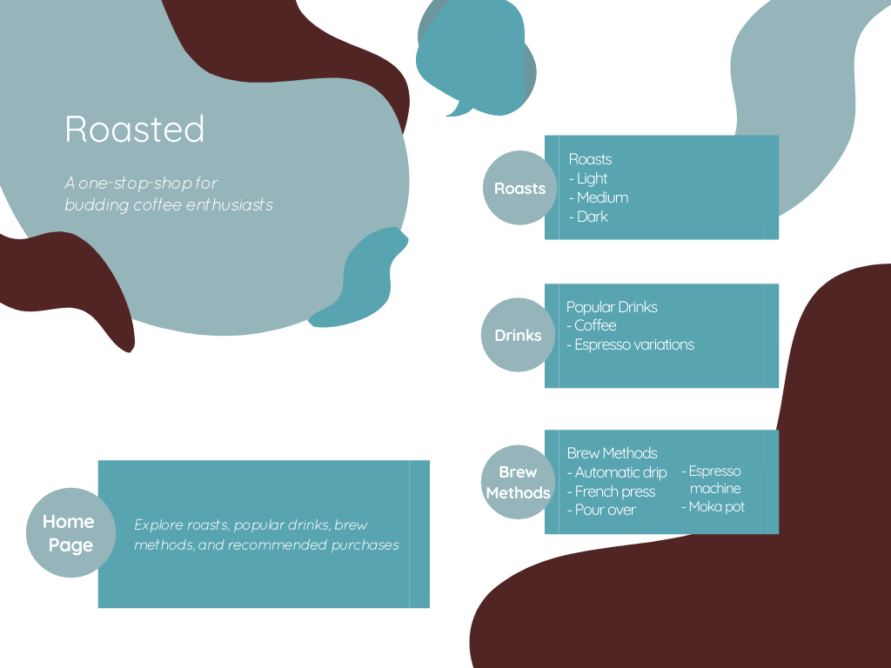

Roasted is an informational mobile application to help users craft a perfect cup of coffee that makes their day just a little bit brighter.
Objective
While staying at home during a global pandemic, I found it was more important than ever to find joy in the little things— like my daily cup of coffee.
While helping my parents transition from a Keurig to a french press for their morning cup, I tried to appeal to them with the most logical, informational facts about
why french press coffee tastes better. My research was tedious because sources were often confusing, contradictory, or simply did not have consolidated information.
Thus, Roasted aims to provide the most essential information on roasts, coffee drinks, brewing methods, and my personal recommendations— all in one place.
User Audience
Coffee Explorers | Users who do not know much about coffee, but enjoy drinking it. They would need consolidated information that offers the basics, as well as interesting tidbits, all without being too overwhelming.
Coffee Dilettantes | Users who know what they like and can be a little picky, but do not know the ins and outs of what makes their coffee taste amazing. They would need information that surpasses the basics, but also improves on the brewing methods or beans they use now, not replaces it.
Coffee Researchers | Users who know quite a bit about coffee, but are looking for aesthetically pleasing information displays, as well as a one-stop-shop that minimizes the need to research using multiple sources.
Ideation
After conducting research from multiple sources and targeting a user audience, I started defining the content that would be in the application.
Broken up into three categories, the application would contain the three different roast types for coffee beans, a variety of coffee drinks that specified the difference
between espresso and coffee, and different brewing methods to cultivate the at-home barista persona.

Prototype
After researching the best programs that would allow me to both design and build a high fidelity protoype, I decided
to use this project as an opportunity to learn Figma.
Looking Forward
This project is a work in progress and from the prototype stage, I hope to launch a fully functioning application.
After conducting user tests and analyzing user data, I would like to improve on the current content, as well as add another section
focused on top coffee-producing countries.